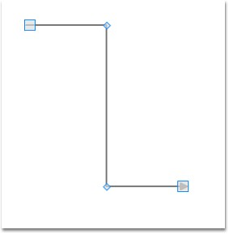
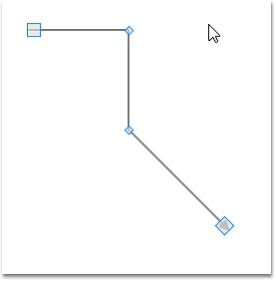
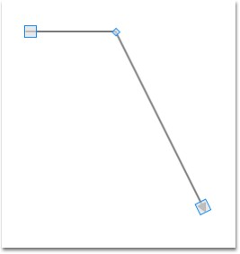

Adding Intermediate Points
Intermediate points can be added in two ways:
· Using Ctrl + Shift Key
· Through Code Behind
Intermediate points can be added at run time by holding Ctrl + Shift and clicking on the line. Intermediate points can be added programmatically. The following code snippet illustrates addition of intermediate lines.
|
[C#]
LineConnector lc = new LineConnector(); lc.ConnectorType=ConnectorType.Straight; lc.StartPointPosition = new Point(100, 100); lc.EndPointPosition = new Point(300, 300); lc.IntermediatePoints.Add(new Point(200,100)); lc.IntermediatePoints.Add(new Point(200,300));
|
|
[VB]
Dim lc As New LineConnector() lc.ConnectorType=ConnectorType.Straight lc.StartPointPosition = New Point(100, 100) lc.EndPointPosition = New Point(300, 300) lc.IntermediatePoints.Add(New Point(200,100)) lc.IntermediatePoints.Add(New Point(200,300))
|

Figure 58: Adding Intermediate Points
Modifying Intermediate Points
Intermediate Points can be modified in two ways:
· Dragging the Vertex
· Through Code Behind
Intermediate points can be modified at run time by clicking and dragging the vertex of the line connector. Intermediate points can be modified programmatically also. The following code snippet illustrates modification of intermediate lines.
|
[C#]
LineConnector lc = new LineConnector(); lc.ConnectorType=ConnectorType.Straight; lc.StartPointPosition = new Point(100, 100); lc.EndPointPosition = new Point(300, 300); lc.IntermediatePoints.Add(new Point(200,100)); lc.IntermediatePoints.Add(new Point(200,300)); lc.IntermediatePoints[1] = new Point(200,200));
|
|
[VB]
Dim lc As New LineConnector() lc.ConnectorType=ConnectorType.Straight lc.StartPointPosition = New Point(100, 100) lc.EndPointPosition = New Point(300, 300) lc.IntermediatePoints.Add(New Point(200,100)) lc.IntermediatePoints.Add(New Point(200,300)) lc.IntermediatePoints(1) = New Point(200,200))
|

Figure 59: Modifying Intermediate Points
Delete Intermediate Points
Intermediate points can be deleted in two ways:
· Using Ctrl + Shift Key
· Through Code Behind
Intermediate points can be deleted by holding Ctrl + Shift and clicking on the vertex that represents intermediate point to be deleted. Intermediate points can be deleted programmatically also. The following code snippet illustrates deletion of intermediate lines.
|
[C#]
LineConnector lc = new LineConnector(); lc.ConnectorType=ConnectorType.Straight; lc.StartPointPosition = new Point(100, 100); lc.EndPointPosition = new Point(300, 300); lc.IntermediatePoints.Add(new Point(200,100)); lc.IntermediatePoints.Add(new Point(200,300)); lc.IntermediatePoints.RemoveAt(1);
|
|
[VB]
Dim lc As New LineConnector() lc.ConnectorType=ConnectorType.Straight lc.StartPointPosition = New Point(100, 100) lc.EndPointPosition = New Point(300, 300) lc.IntermediatePoints.Add(New Point(200,100)) lc.IntermediatePoints.Add(New Point(200,300)) lc.IntermediatePoints.RemoveAt(1)
|

Figure 60: Deleting Intermediate Points